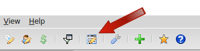

Lancer le Gestionnaire de rapport (GRM) ou utiliser le menu Outils → Gestionnaire de rapports… .
Il y a 2 options disponibles.
Pour MMEX version 1.4.0, il y a une possibilité de transférer des dates dans le script SQL du rapport. Il y a quatre options: &single_date, &begin_date, &end_date, &budget_years. Si un SQL contient un de ces paramètres, il sera remplacé par une date à partir du calendrier. Par exemple, ce script SQL retourne tous les soldes des comptes pour la date spécifiée :
with b as (
select ACCOUNTID, STATUS
, (case when TRANSCODE = 'Deposit' then TRANSAMOUNT else -TRANSAMOUNT end) as TRANSAMOUNT
, TRANSDATE
from CHECKINGACCOUNT
union all
select TOACCOUNTID, STATUS, TOTRANSAMOUNT ,TRANSDATE
from CHECKINGACCOUNT
where TRANSCODE = 'Transfer'
)
select a.ACCOUNTNAME,
total(TRANSAMOUNT) + a.INITIALBAL as Balance
from ACCOUNTLIST as a, b
where a.STATUS = 'Open'
and b.ACCOUNTID = a.ACCOUNTID
and b.STATUS <> 'V'
and b.TRANSDATE <= '&single_date'
group by a.ACCOUNTNAME order by a.ACCOUNTNAME asc;
Il y a beaucoup de rapports fournis par des utilisateurs ou des développeurs sur GitHub
Si vous avez créé un rapport utile, il peut être exporté dans un fichier ZIP.